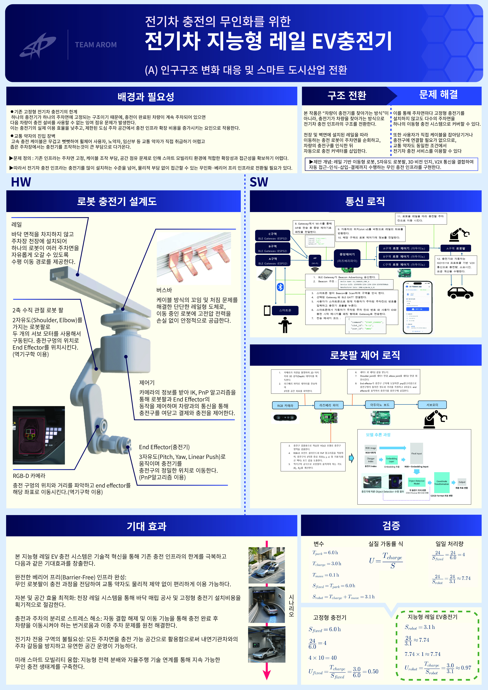
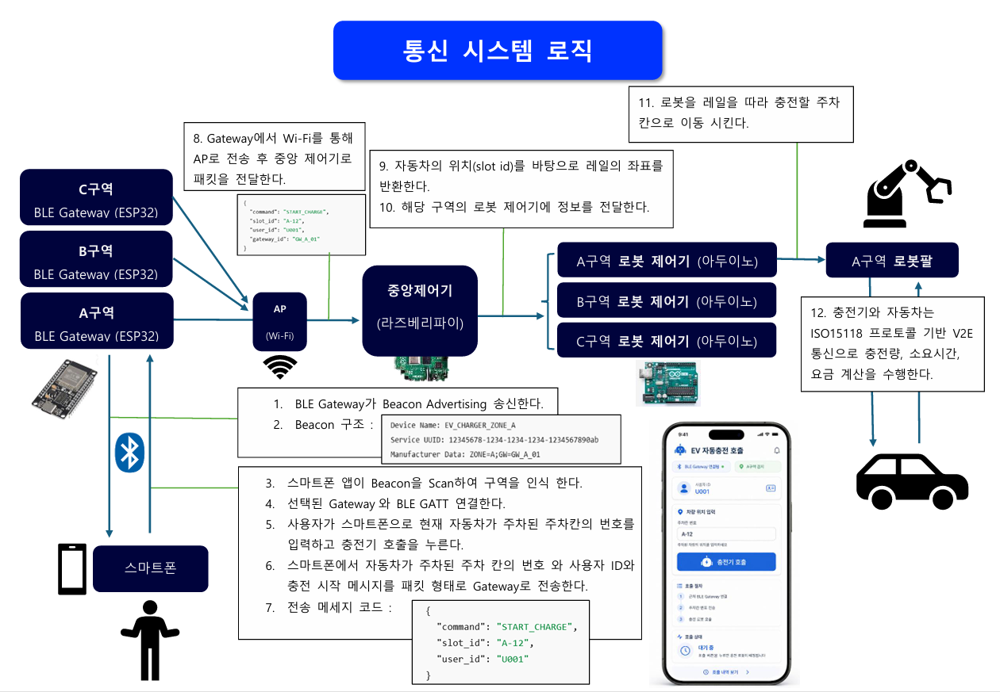
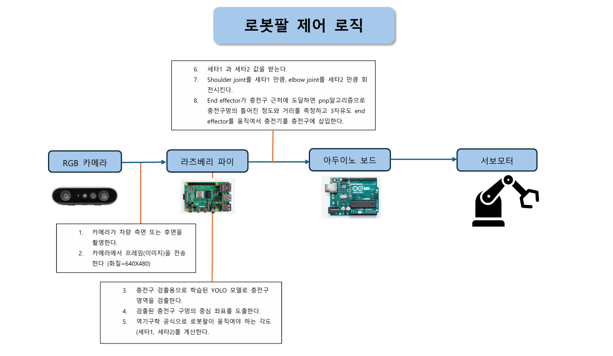

Network Logic

BLETwo important missions to consider in this porject is calling the robot arm charger and combining multiple robot arm charger into one controller. In order to acheive this, we used BLE(bluetooth Low energy),which is an network system between smartphone and controller. Also we used WIFI in order to connect local BLE Gateway and contral commander. These network systems connected smartphone, local Gateway and central commander
Harware control logic

In order to build a robot arm contoller logic, We needed a camera, rasberrypi, arduino and servo motors.The camera sends the coordinate information of the car's charging port to rasberry pi. Rasberry pi calculates the angle of robot arm based on the coordinate informartion using Inverse Kinematics. Inverse Kinematics is a formula that converts target coordinate into robot arms' angle. than the angle information is sent to arduino and arduino moves the robot arm's servo motor.
Future development
This project was not made into full prototype.
Award